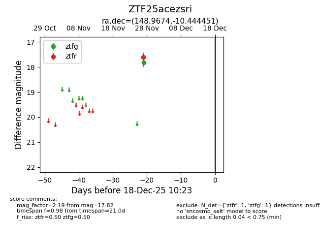
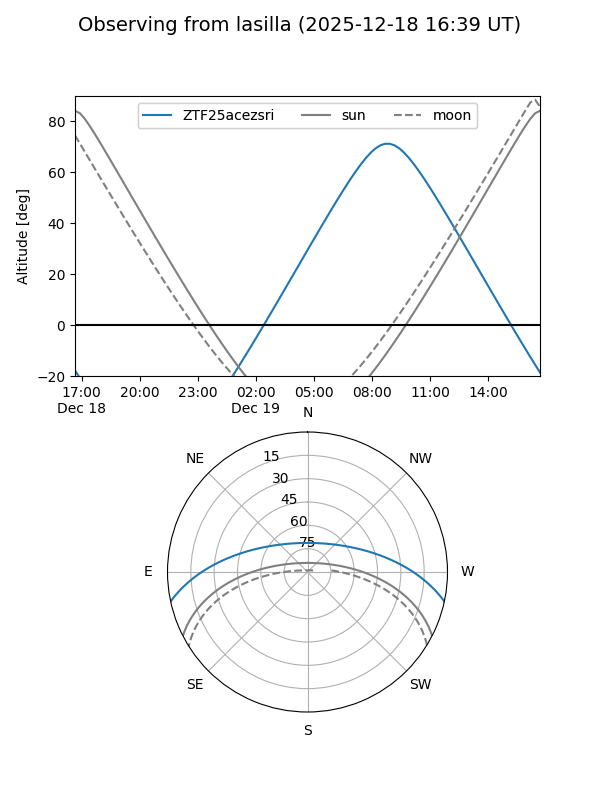

ZTF25acezsri
Target ZTF25acezsri at 2025-12-18 11:17
Aliases and brokers:
FINK: fink-portal.org/ZTF25acezsri
Lasair: lasair-ztf.lsst.ac.uk/objects/ZTF25acezsri
ALeRCE: alerce.online/object/ZTF25acezsri
alt names
ZTF25acezsri (ztf,fink_ztf)
Coordinates:
equatorial (ra, dec) = 148.9674,-10.44445
equatorial (HMS+DMS) = 09:55:52.17,-10:26:40.02
galactic (l, b) = (248.3295,+33.23529)
Photometry
last ztfg=17.82, ztfr=17.60
1 ztfg, 1 ztfr detections
Lightcurve

Visibility


Additional plots